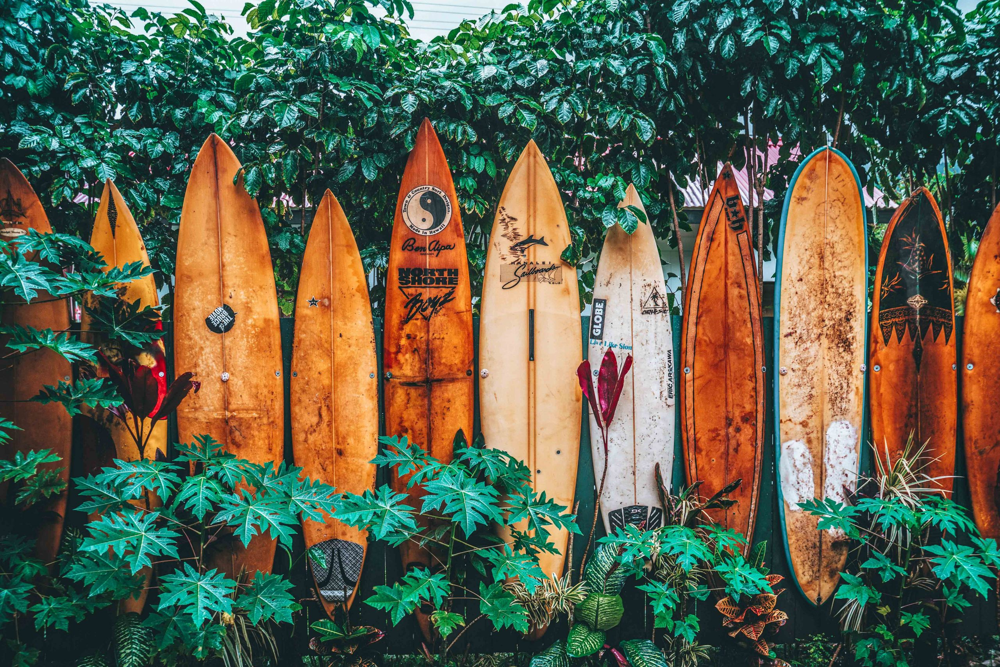
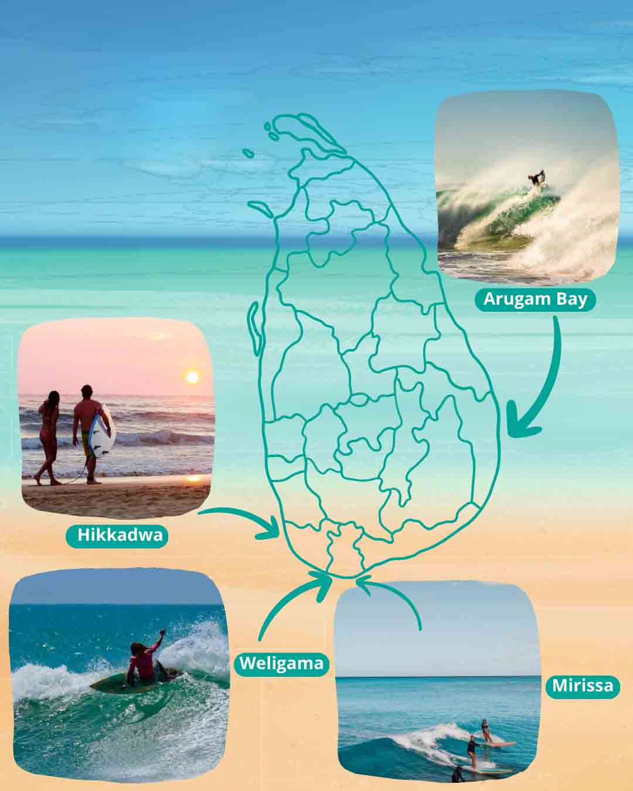
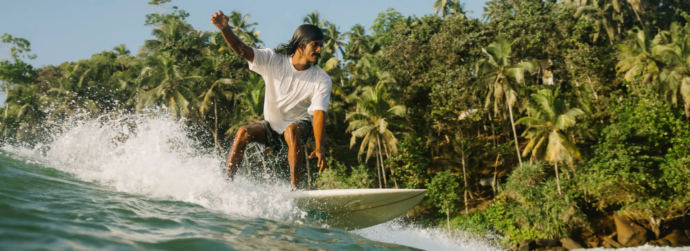
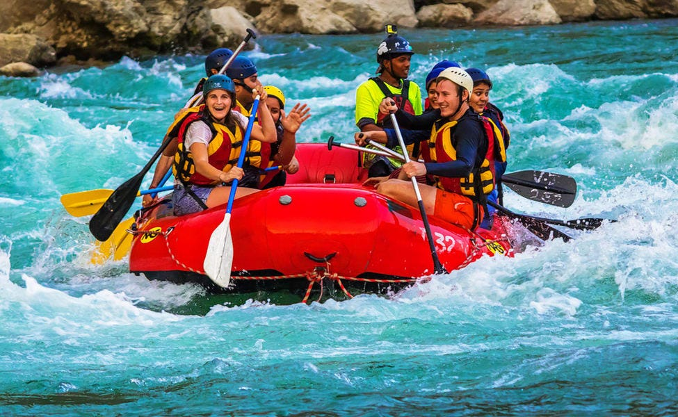
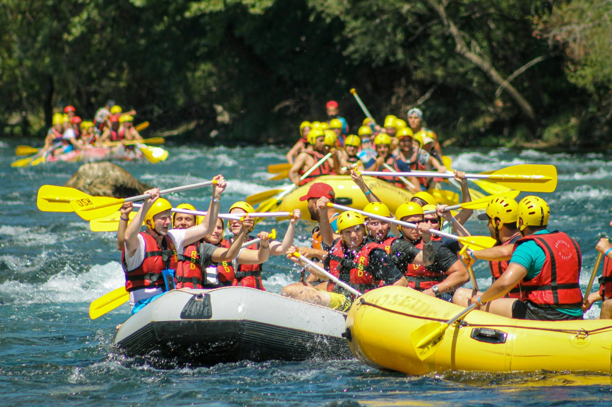
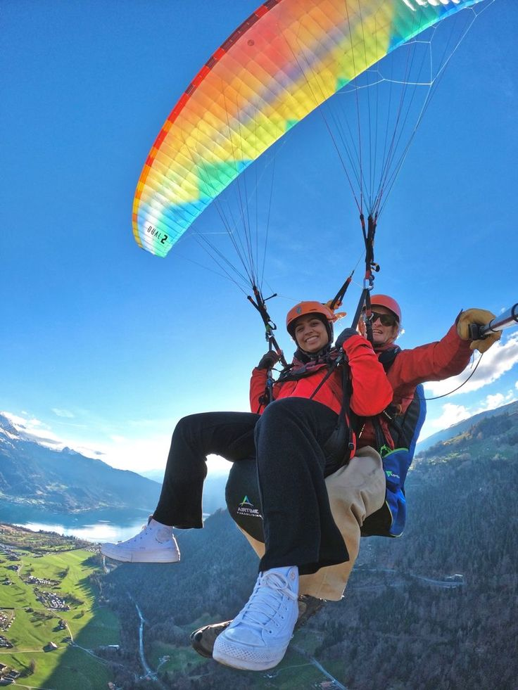
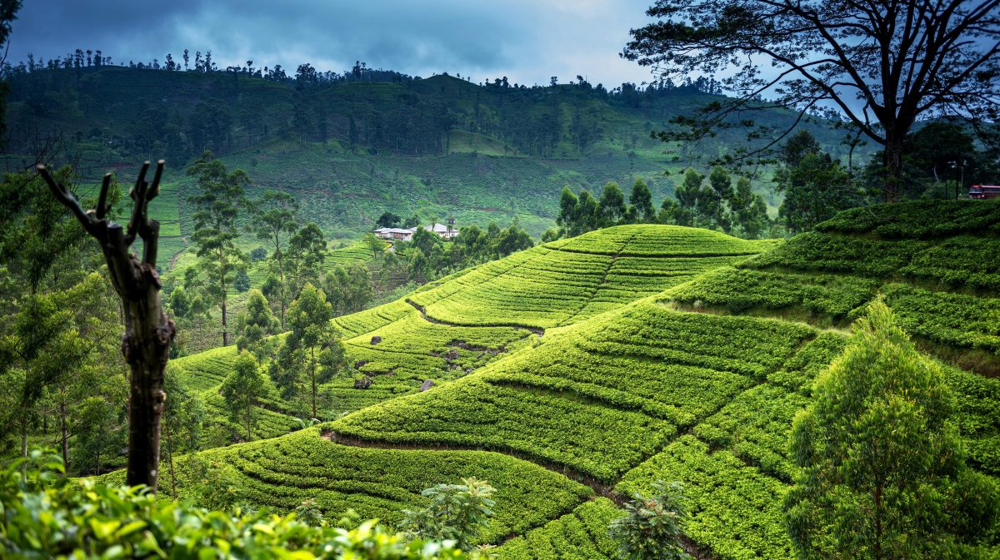

"Unleash Your Wild Side with Adventure and Adrenaline!" Sri Lanka isn't just about serene beaches and ancient temples — it's also a playground for thrill-seekers and adventure lovers! From highland cliffs to raging rivers and coastal waves, the island offers a wide variety of exhilarating activities set in stunning natural landscapes. Soar through the skies with zip-lining adventures in Ella, or scale scenic cliffs with rock climbing and abseiling in the Knuckles Mountain Range. Dive into action with white-water rafting in Kitulgala - a favorite for both beginners and professionals, offering fast rapids surrounded by lush rainforest. For ocean lovers, Sri Lanka's southern coast provides the perfect backdrop for surfing, kite surfing, and scuba diving. Ride the waves in Arugam Bay or explore the coral reefs and shipwrecks off the coast of Hikkaduwa and Trincomalee. Head up to the hill country for paragliding over misty valleys or take on a mountain bike trail through rugged tea plantations. For those who love exploring underground, the caves in Belilena and Batatotalena offer caving expeditions that are both mysterious and challenging. Even wildlife watching can become a thrilling experience - go on an open-jeep safari chase through Yala or Wilpattu, tracking elusive leopards and elephants in their natural habitat. Whether you're hiking to the top of Adam's Peak, camping under the stars in a national park, or kayaking across a still jungle lake, Sri Lanka offers non-stop thrills for every level of adventurer.
|  |  |
|  |
Arugam Bay is Sri Lanka’s surf capital and one of the top 10 surf spots in the world. Its long right-hand point breaks attract surfers of all levels. The beach vibe is energetic, with surfing competitions, surf schools, and night events creating a thrilling atmosphere all season long.
|  |  |
Kitulgala is the go-to destination for white water rafting in Sri Lanka. The Grade 3-4 rapids of the Kelani River provide an adrenaline-pumping ride through rainforest scenery. The area also offers confidence jumps, stream slides, canyoning, and nature trails for extra thrill.
|  |  |
Fly like a bird over tea plantations and misty hills. Paragliding in the central highlands offers a peaceful yet thrilling experience as you soar above valleys and towns. Certified instructors and tandem flights make it safe for beginners.

|

|
Flying Ravana Mega Zipline is one of Sri Lanka's most thrilling and iconic adventure activities, located in the lush hills of Ella, near the famous Little Adam's Peak. This zipline stretches over 500 meters, crossing high above green tea plantations, forested slopes, and deep valleys - offering breathtaking aerial views of the Central Highlands. Riders are securely strapped in a superman-style harness, allowing them to "fly" through the air at speeds reaching up to 80 km/h. The sensation of gliding over the misty mountains is both exhilarating and scenic - a perfect mix of thrill and beauty. Named after King Ravana, the mythical ruler from the Ramayana who was said to have flown ancient aircraft, this zipline captures the imagination and adrenaline of modern adventurers. The Flying Ravana Adventure Park also offers ATV rides, archery, abseiling, and climbing for those looking to continue the action.